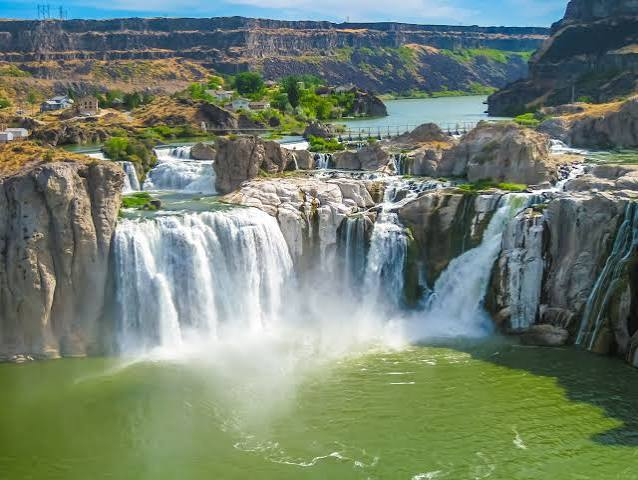

Idaho ist ein Bundesstaat im Nordwesten der Vereinigten Staaten von Amerika mit einer Bevölkerung von 1.839.106
(US Census 2020). Er gehört damit zu den dünn besiedelten Bundesstaaten. Die Hauptstadt ist Boise. Der Staat wird auch als Gem State (Edelstein-Staat) bezeichnet.
Der Name des Staates Idaho rührt wahrscheinlich vom indianischen Wort „Ee-dah-how“ der Shoshone her, was sinngemäß etwa „Licht auf den Bergen“ bedeutet. Anderen
Behauptungen zufolge soll diese Übersetzung eine freie Erfindung des exzentrischen Minenlobbyisten George M. Willing sein.
Quellen- und Lizenzhinweis:
Dieser Text basiert auf dem Wikipedia-Artikel
Idaho
(geänderte Fassung) und steht unter der Lizenz
Creative Commons Attribution-ShareAlike 4.0 International (CC BY-SA 4.0).
Das Bild ist von
reisenexclusiv.com